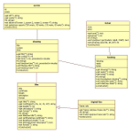

Java
Through a combination of learning the principles of both Object Orientated Programming or OOP and the Java programming language, I was able to build a cinema system that a client and an administrator could use. For example, an administrator could add and remove a film or move and/or assign a screen to a particular showing. Whereas, a client could input a request to search for films that are current at the cinema, which in theory would bring up a list of films and their relevant information. The client could also book to see a film which would be a quite a long process.
Below are two images of the planning work that I produced for the cinema system.Both items were produced through Star UML.
{kind=link}
Star UML
In working out what was part of the solution, I used an application known as 'Star UML'. While using Star UML, I put together a Use Case diagram to work out the function of the application, what kind of data would be stored and who likely would be using it. From producing the use case, I was able to build up a mental image of what steps the user would go through to, for example, book a ticket nevertheless, what I created was a User Journey document. In addition, I also used Star UML to produce the class model and work out the commands that would run within the application to manage the data and it's relevant functions.
{kind=link}